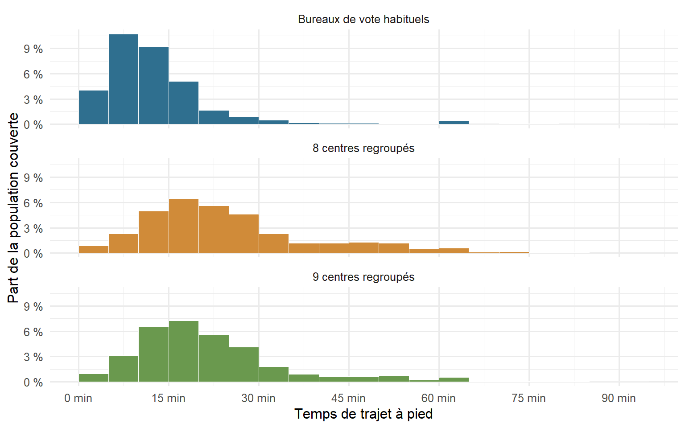
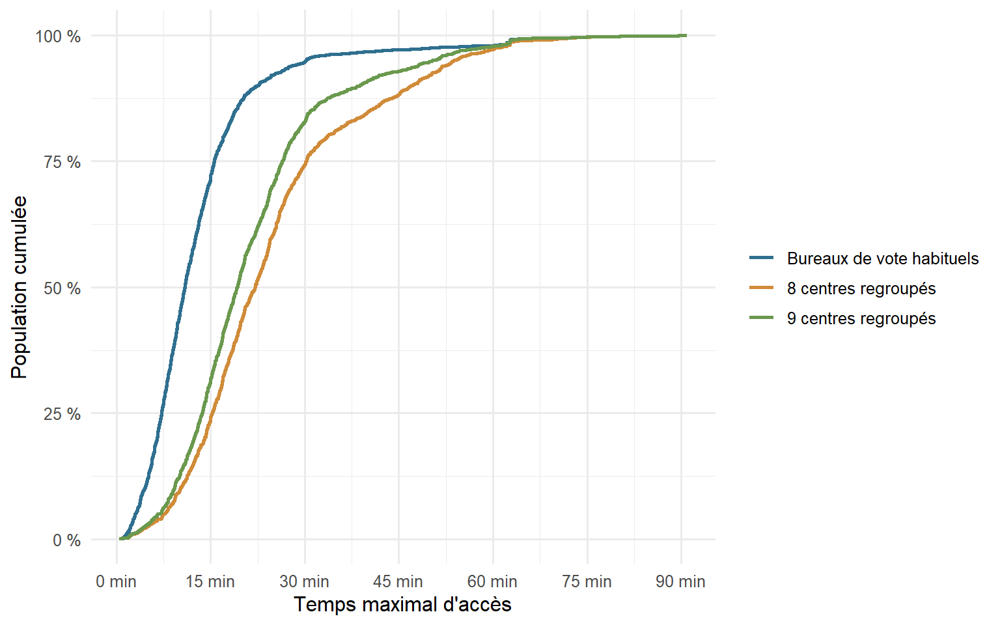
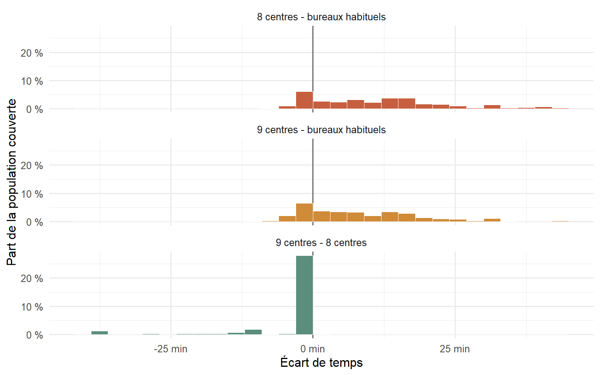
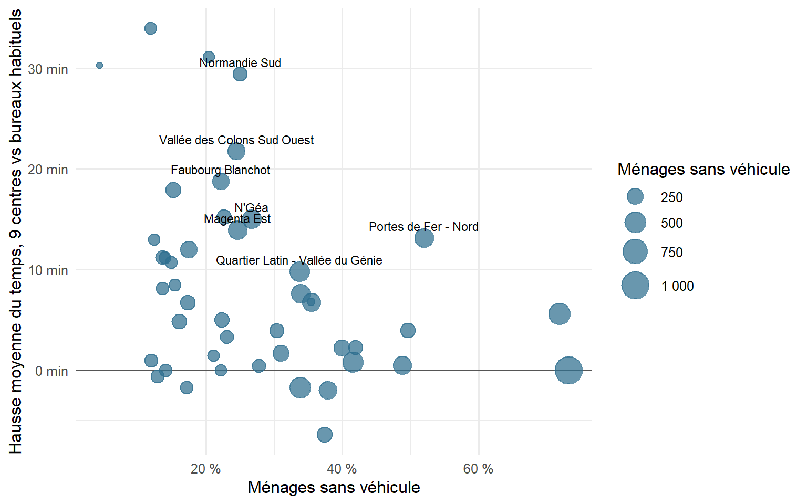
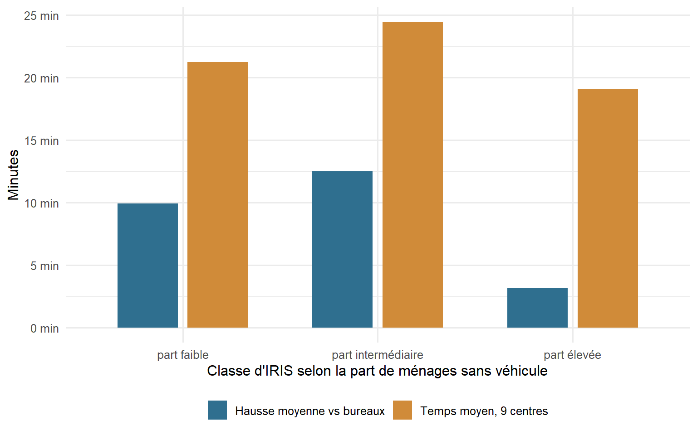

flowchart LR A[Résultats par bureau et centres regroupés] --> B[Points sources] C[Réseau routier BDROUTE-NC] --> D[Graphe piéton pondéré en minutes] E[Grille population 2020] --> F[Cellules habitées] B --> G[Rattachement au nœud routier le plus proche] F --> H[Rattachement au nœud routier le plus proche] D --> I[Plus courts chemins vers la source la plus proche] G --> I H --> I I --> J[Temps par cellule habitée] J --> K[Comparaison bureaux complets / 8 centres / 9 centres] K --> L[Croisement avec IRIS RGP 2019]
Résumé
Le regroupement des bureaux de vote modifie concrètement les conditions d’accès au vote à l’échelle des quartiers. À partir d’une modélisation des temps de trajet piétons sur réseau routier, cette note explore les effets potentiels de plusieurs scénarios de regroupement des centres de vote à Nouméa.
Les résultats montrent une hausse importante des temps d’accès moyens et, surtout, une augmentation marquée de la population située à plus de 30 minutes à pied d’un centre de vote. Dans le scénario à 9 centres regroupés, le temps moyen estimé passe de 13,3 à 21,8 minutes, tandis que la part de population située à plus de 30 minutes à pied passe de 5,2 % à 17,2 %.
L’analyse montre également que les effets du regroupement ne sont pas homogènes. Certains quartiers cumulent hausse des temps de trajet et forte part de ménages sans véhicule, ce qui peut accentuer localement les contraintes d’accès au vote.
Cette note constitue un travail exploratoire destiné à alimenter une réflexion plus large sur l’accessibilité électorale et les inégalités spatiales d’accès au vote.
Introduction
La question du regroupement des bureaux de vote s’est imposée dans le débat public calédonien à partir des élections législatives anticipées de 2024, organisées dans le contexte exceptionnel des émeutes et des tensions sécuritaires ayant suivi les événements du 13 mai.
À Nouméa, les 56 bureaux de vote habituels avaient alors été regroupés sur seulement 7 sites afin de sécuriser l’organisation du scrutin. Ce dispositif exceptionnel avait été présenté comme une réponse aux contraintes logistiques et sécuritaires du moment. Malgré cette réorganisation, la participation au second tour des législatives avait atteint un niveau particulièrement élevé à l’échelle du territoire.
Le regroupement des bureaux de vote n’est cependant pas resté limité à ce seul contexte d’urgence. Le dispositif a ensuite été largement reconduit lors des élections municipales de 2026, avec une organisation reposant sur 8 grands sites de vote à l’échelle de la commune. Cette décision a suscité plusieurs critiques et recours politiques autour des questions d’accessibilité, de proximité du vote et de sincérité du scrutin.
Derrière ces débats institutionnels se pose une question plus concrète et plus territoriale : comment le regroupement des centres de vote modifie-t-il réellement les conditions d’accès au vote selon les quartiers de Nouméa ?
En effet, deux électeurs inscrits dans une même commune ne font pas nécessairement face au même coût de déplacement. La structure du réseau routier, les ruptures urbaines, la distance aux centres ouverts ou encore l’accès à un véhicule peuvent fortement modifier l’accessibilité réelle au vote.
Cette note propose une première estimation spatiale des effets potentiels du regroupement des bureaux de vote à Nouméa à partir d’un calcul de temps de trajet piétons sur réseau routier. Trois configurations sont comparées : - la configuration habituelle des bureaux de vote ; - un scénario à 8 centres regroupés ; - un scénario à 9 centres regroupés.
L’objectif n’est pas de mesurer directement les comportements électoraux ni d’expliquer l’abstention, mais de produire un indicateur d’accessibilité potentielle permettant d’identifier les secteurs où le regroupement pourrait augmenter les contraintes de déplacement, en particulier pour les ménages les moins motorisés.
Note
Cette note constitue un travail exploratoire et méthodologique réalisé dans un objectif d’analyse spatiale rapide des effets potentiels du regroupement des bureaux de vote à Nouméa. Les résultats présentés doivent être considérés comme des estimations préliminaires destinées à alimenter une réflexion publique et scientifique plus large.
Les traitements, indicateurs et cartes ont vocation à être consolidés dans le cadre d’une publication ultérieure plus complète, intégrant notamment :
des tests de sensibilité méthodologique ;
une validation plus fine des itinéraires piétons ;
des analyses statistiques complémentaires ;
un croisement plus approfondi avec les données socio-électorales et territoriales.
Les résultats présentés ici ne constituent donc pas une mesure définitive des comportements électoraux ni des déplacements réels des électeurs, mais un indicateur d’accessibilité potentielle construit à partir de données spatiales disponibles.
Pourquoi estimer des temps de trajet ?
Le regroupement de bureaux de vote change la géographie concrète de l’accès au vote. Deux électeurs rattachés administrativement au même scrutin ne font pas nécessairement face au même effort de déplacement selon le quartier, la densité du réseau viaire, la localisation des centres ouverts et la possibilité ou non d’utiliser une voiture.
Cette note documente une estimation des temps de trajet piéton vers le point de vote le plus proche à Nouméa. L’objectif n’est pas de reconstituer les trajets réellement empruntés par chaque électeur, mais de produire un indicateur spatial comparable entre plusieurs configurations :
- une configuration de référence avec les bureaux de vote géolocalisés ;
- une configuration à 8 centres de vote regroupés ;
- une configuration à 9 centres de vote regroupés, sans Ko We Kara, avec l’ajout du collège de Kaméré et de la salle de boxe Vincent Kafoa.
Le résultat doit être lu comme une mesure d’accessibilité potentielle. Il devient particulièrement utile lorsqu’il est rapproché de la part des ménages sans véhicule, issue du RGP 2019 à l’échelle IRIS.
Les données mobilisées
L’estimation s’appuie sur cinq familles de données locales :
- les résultats électoraux par bureau, pour isoler les bureaux de Nouméa et leurs coordonnées ; les bureaux de votes réputés dégradés à la rentrée 2025 et possiblement affectés pour une réouverture (Gustave LODS et PERVENCHES) ont été retirés du calcul
- la liste des centres regroupés, saisie comme points de destination alternatifs ;
- le réseau routier BDROUTE-NC, transformé en graphe de déplacement ;
- la grille de population
NCL_Pop_Grid_2020.tif, utilisée pour ne calculer l’indicateur que sur les cellules habitées ; - les IRIS du RGP 2019, dont le champ
percent_menages_sans_vehicules.
Toutes les opérations de distance et de réseau sont réalisées dans le système projeté RGNC91-93 / Lambert New Caledonia, EPSG:3163. Les temps sont exprimés en minutes, avec une hypothèse de marche à 5 km/h.
Important
Les rasters analytiques ne sont renseignés que sur les cellules habitées. Les rasters lissés servent à la cartographie finale, mais les statistiques descriptives ci-dessous sont calculées sur les cellules habitées, pondérées par la population de la grille.
Chaîne de traitement
Le principe est le suivant. Chaque segment du réseau routier devient une arête de graphe. Son poids correspond au temps nécessaire pour le parcourir à pied. Les bureaux ou centres de vote sont rattachés au nœud routier le plus proche ; les cellules habitées le sont également. On ajoute ensuite une source artificielle connectée à tous les points de vote, puis on calcule le plus court chemin vers l’ensemble des nœuds du réseau. Le temps final d’une cellule correspond au temps d’accès au réseau plus le temps de réseau jusqu’au point de vote le plus proche.
Ce choix permet de comparer des configurations de manière homogène. Il évite aussi une lecture purement à vol d’oiseau, qui sous-estime souvent les contraintes réelles dans une ville structurée par les routes, les ruptures de pente, les baies, les emprises et les détours.
Trois configurations comparées
| scénario | population couverte | moyenne (min) | médiane (min) | P75 (min) | P90 (min) | population > 15 min (%) | population > 30 min (%) |
|---|---|---|---|---|---|---|---|
| Bureaux de vote habituels | 93 084 | 13,3 | 10,9 | 15,5 | 22,4 | 28,1 | 5,2 |
| 8 centres regroupés | 93 084 | 24,9 | 22,1 | 30,3 | 47,0 | 75,7 | 25,7 |
| 9 centres regroupés | 93 084 | 21,8 | 19,2 | 26,4 | 38,7 | 68,1 | 17,2 |
| Lecture : statistiques pondérées par la population de la grille habitée. | |||||||
Dans la configuration de référence, le temps moyen pondéré est de 13,3 min. Il passe à 24,9 min dans le scénario à 8 centres, puis à 21,8 min dans le scénario à 9 centres.
La différence entre les scénarios ne se résume pas à une hausse uniforme. Le regroupement agit surtout sur la queue de distribution : dans le scénario à 9 centres, 17,2 % de la population couverte dépasse 30 minutes à pied, contre 5,2 % dans la configuration de référence.


Mesurer l’effet du regroupement
| comparaison | moyenne (min) | médiane (min) | P75 (min) | P90 (min) | population > +5 min (%) | population > +10 min (%) | population avec baisse (%) |
|---|---|---|---|---|---|---|---|
| 8 centres - bureaux habituels | 11,6 | 10,5 | 17,6 | 27,8 | 64,5 | 51,3 | 9,1 |
| 9 centres - bureaux habituels | 8,5 | 6,2 | 14,6 | 22,1 | 53,3 | 39,2 | 14,4 |
| 9 centres - 8 centres | −3,1 | 0,0 | 0,0 | 0,0 | 0,0 | 0,0 | 17,3 |
| Lecture : un delta positif indique un temps plus long que dans la configuration de référence. | |||||||
Le scénario à 8 centres ajoute en moyenne 11,6 min par rapport aux bureaux habituels. Le scénario à 9 centres réduit cette hausse moyenne à 8,5 min. L’ajout de Kaméré et de la salle Vincent Kafoa ne compense pas tout l’effet du regroupement, mais il améliore nettement l’accessibilité des quartiers du nord de Nouméa.

Où le manque de véhicule pèse le plus ?
Le croisement avec le RGP 2019 ne doit pas être interprété comme une causalité entre motorisation et distance au bureau. Il sert plutôt à identifier les zones où une hausse de temps de marche peut toucher des ménages pour lesquels l’absence de véhicule rend le déplacement plus contraint.
À l’échelle des IRIS couverts par la grille habitée, la part moyenne agrégée des ménages sans véhicule est de 27,4 %. La corrélation simple entre la part de ménages sans véhicule et le temps moyen en scénario à 9 centres est de -0,02; celle avec le delta 9 centres moins bureaux habituels est de -0,36.
Le signal n’est pas une relation linéaire simple. Certains IRIS très peu motorisés sont proches d’un centre, tandis que d’autres quartiers plus motorisés peuvent connaître une forte hausse. L’analyse pertinente est donc celle du cumul local entre forte part de ménages sans véhicule et hausse de temps.

| IRIS | profil | ménages sans véhicule | ménages sans véhicule (%) | bureaux habituels (min) | 9 centres (min) | hausse (min) |
|---|---|---|---|---|---|---|
| Vallée des Colons Sud Ouest | hausse de temps très forte | 286 | 24,5 | 5,6 | 27,3 | 21,7 |
| N'Géa | cumul intermédiaire | 361 | 26,7 | 7,7 | 22,8 | 15,0 |
| Magenta Est | cumul intermédiaire | 382 | 24,6 | 13,0 | 26,9 | 13,9 |
| Portes de Fer - Nord | forte part sans véhicule et hausse forte | 369 | 52,0 | 8,1 | 21,2 | 13,1 |
| Faubourg Blanchot | cumul intermédiaire | 257 | 22,2 | 8,0 | 26,8 | 18,8 |
| Normandie Sud | hausse de temps très forte | 150 | 25,0 | 19,5 | 48,9 | 29,4 |
| Quartier Latin - Vallée du Génie | cumul intermédiaire | 439 | 33,7 | 6,5 | 16,3 | 9,8 |
| Vallée des Colons Sud Est | cumul intermédiaire | 189 | 15,2 | 7,3 | 25,2 | 17,9 |
| Trianon | cumul intermédiaire | 251 | 17,5 | 9,1 | 21,1 | 12,0 |
| Ouémo | hausse de temps très forte | 88 | 11,9 | 9,8 | 43,7 | 34,0 |
| Magenta Tours | très forte part sans véhicule | 515 | 71,9 | 10,4 | 15,9 | 5,5 |
| Aérodrome Sud | cumul intermédiaire | 368 | 33,9 | 5,1 | 12,7 | 7,6 |
| Classement par indice de cumul : ménages sans véhicule estimés × hausse moyenne positive. | ||||||
Ces zones prioritaires ne racontent pas toutes la même chose.
Dans un premier groupe, Vallée des Colons Sud Ouest, N’Géa, Magenta Est, Faubourg Blanchot, Vallée des Colons Sud Est et Trianon combinent surtout un volume important de ménages sans véhicule avec une hausse nette du temps de marche. La question à documenter cartographiquement est alors celle de la perte de proximité : le changement de lieu de vote transforme un déplacement court en trajet plus long, y compris dans des quartiers résidentiels relativement denses.
Un deuxième groupe relève davantage de la vulnérabilité sociale à l’accessibilité. Portes de Fer - Nord et Magenta Tours ressortent parce que la part de ménages sans véhicule y est très élevée. Même lorsque la hausse moyenne n’est pas la plus spectaculaire, l’absence de véhicule rend le déplacement plus dépendant de la marche, du transport collectif ou de l’accompagnement par un tiers.
Enfin, Normandie Sud et Ouémo doivent être lus comme des cas de géographie du réseau : la hausse moyenne y est forte, voire très forte, ce qui invite à vérifier les itinéraires piétons, les ruptures urbaines et la position réelle du centre le plus proche.

Cartographie de l’accessibilité aux bureaux de vote
Les graphiques précédents donnent les distributions et les classements. Les cartes QGIS finales peuvent venir compléter la lecture spatiale à trois endroits :
- carte des temps avec bureaux habituels ;
- carte des temps avec centres regroupés ;
- carte des ménages sans véhicule RGP 2019 ;
- carte de l’abstention au premier tour, si l’on veut discuter l’accessibilité avec le comportement électoral observé.


Lecture synthétique
La configuration de référence maintient une proximité moyenne relativement faible avec les bureaux habituels. Le passage à des centres regroupés augmente nettement le temps d’accès piéton, surtout pour les cellules déjà situées à distance des nouveaux centres. Le scénario à 9 centres réduit une partie de cet effet par rapport au scénario à 8 centres, notamment dans le nord de Nouméa, mais laisse subsister des hausses importantes dans plusieurs IRIS.
La mise en regard avec le RGP 2019 nuance l’interprétation. Les IRIS les moins motorisés ne sont pas mécaniquement ceux où la hausse est la plus forte. Les zones à regarder en priorité sont plutôt celles où les deux dimensions se cumulent : Vallée des Colons Sud Ouest, N’Géa, Magenta Est, Portes de Fer - Nord, Faubourg Blanchot, Normandie Sud, Quartier Latin - Vallée du Génie, Vallée des Colons Sud Est, Trianon, Ouémo, Magenta Tours et Aérodrome Sud. Elles ne relèvent pas toutes du même mécanisme, mais elles donnent une bonne grille de lecture pour articuler la carte des temps, la carte des ménages sans véhicule et, ensuite, la carte de l’abstention.
Limites méthodologiques
Plusieurs limites doivent être gardées à l’esprit dans l’interprétation des résultats.
Premièrement, les temps de trajet estimés reposent sur un modèle théorique de déplacement piéton. Les calculs utilisent une vitesse uniforme de marche fixée à 5 km/h et ne prennent pas en compte les différences d’âge, de mobilité réduite, de conditions climatiques, de sécurité piétonne ou de fatigue.
Deuxièmement, le réseau routier utilisé comme support de calcul ne représente pas nécessairement l’ensemble des cheminements réellement empruntés par les habitants. Certains raccourcis, escaliers, passages piétons informels ou chemins secondaires peuvent être absents du réseau utilisé.
Troisièmement, les estimations reposent sur un rattachement des cellules habitées et des bureaux de vote au nœud routier le plus proche. Cette opération introduit une approximation spatiale qui peut localement modifier les temps calculés, notamment dans les secteurs de faible densité ou proches de ruptures du réseau.
Quatrièmement, l’analyse porte uniquement sur l’accessibilité piétonne potentielle et ne prend pas en compte les autres modes de déplacement (voiture, transport collectif, covoiturage, taxi, etc.). Les résultats ne doivent donc pas être interprétés comme une estimation directe de la difficulté réelle d’accès au vote pour l’ensemble de la population.
Cinquièmement, les résultats ne permettent pas d’établir un lien causal direct entre distance au bureau de vote et participation électorale. L’abstention dépend également de nombreux facteurs politiques, sociaux, économiques et contextuels qui dépassent le seul enjeu de l’accessibilité spatiale.
Enfin, les cartes lissées utilisées pour la visualisation servent principalement à faciliter la lecture spatiale. Elles ne remplacent pas les rasters analytiques d’origine, qui demeurent la référence pour les calculs statistiques et les comparaisons quantitatives.
Sources et données utilisées
Les analyses présentées dans cette note reposent sur plusieurs jeux de données publics et institutionnels.
Données électorales
- Résultats électoraux par bureau de vote — Gouvernement de la Nouvelle-Calédonie / services électoraux.
Réseau routier
- Base de données routière BDROUTE-NC — Direction des Infrastructures, de la Topographie et des Transports terrestres (DITTT).
Population et occupation humaine
Human Settlement Footprint / grille de population 2020 — Pacific Community (SPC).
https://pacificdata.org/data/dataset
Données socio-démographiques
Recensement Général de la Population 2019 — Institut de la statistique et des études économiques de Nouvelle-Calédonie (ISEE).
https://www.isee.nc/population/recensement-de-la-population
Données géographiques et traitements
Système de coordonnées : RGNC91-93 / Lambert New Caledonia (EPSG:3163).
Traitements spatiaux réalisés sous R et QGIS.
Calculs de réseau réalisés à partir d’une représentation graphe du réseau routier.